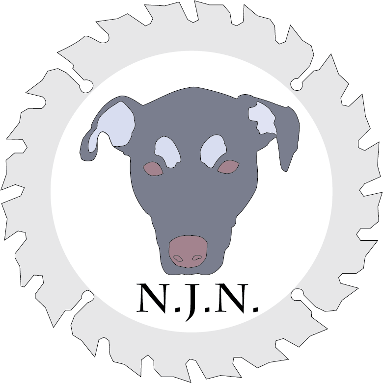

Work
N.J.N Logo
Welcome to the Theater
Pencil Drawings
Lizrd Concept Design
Zen Pavilion
Photography
JESSICA NOSAL
About
N.J.N. Logo
My brother is a carpenter and wanted a logo for his designs. This is a concept design I created. One of our dogs, Chancy was used as inspiration for the piece.
